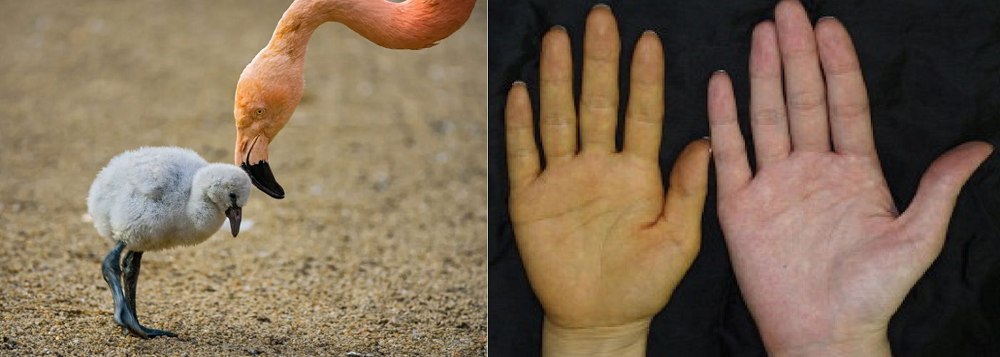

Astaxanthin is a type of terpene called a cartenoid. A terpene is class of compounds that are unstaturated hydrocarbons
produced mostly by plants. Most commercially used terpenes are derived from conifer tree resins (pine sap). All terpenes have
an empirical formula of C5H8, meaning that substances with the formula C10H16, C15H24, C20H32, and so on are all terpenes.
Cartenoids are red, orange, and yellow pigments.
These pigments are produced by plants, algae, fungi, and certain bacteria. All cartenoids are terpenes. Cartenoids are responsible for the warm
colors of many organisms you're likely already familiar with. Examples include carrots, pumpkins, tomatoes, corn, salmon, flamingos, shrimp, and lobsters.
Flamingos, specifically, get their colorful plumage from the cartenoids contained in their diet of shrimp, algae, and crustaceans. The cartenoids
take awhile to build up in their bodies, which is why young flamingos aren't pink.
Like flamingos, humans can also be affected by the cartenoids in their diet! Carotenosis, also known as cartonemia, is a reversible and benign condition that usually
occurs when someone's diet is very rich in cartenoid containing food. The outer layer of skin obtains an orange discoloration, with areas of thicker skin
like the palms, soles, knees, and elbows being more deeply affected. I myself had this condition as a toddler, on account of my favorite food being tomatoes!

A baby flamingo next to an adult one and the palm of a woman with carotenosis next to the palm of someone without it
The cartenoid astaxanthin is produced naturally by a freshwater algae called Haematococcus pluvialis as well as
a yeast fungus called Xanthophyllomyces dendrorhous. Salmon, flamingos, shrimp, and crustaceans all owe their coloring to astaxanthin.
Although this cartenoid could be used for food coloring, in the US, it is only approved for usage in animal and fish food. Farm-raised salmon are fed food with astaxanthin
in it to give their flesh a pinker appearance. It is also sometimes added to chicken food to increase egg yolk coloration. The second largest application for
astaxanthin is its use as a dietary supplement. Research is still in the early stages, but studies suggest that it could have a myriad of heath benefits.
What are some of the suggested health benefits of astaxanthin?